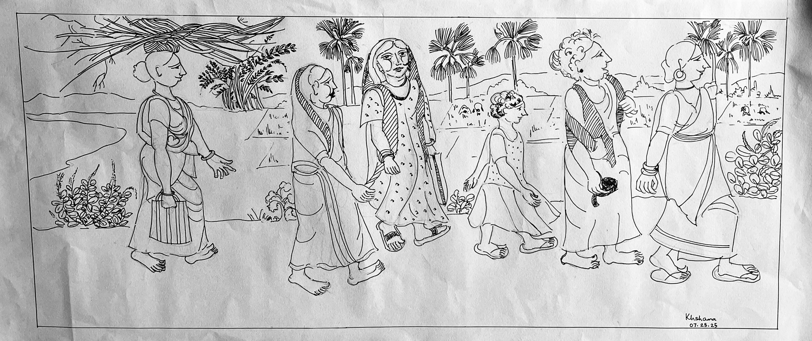
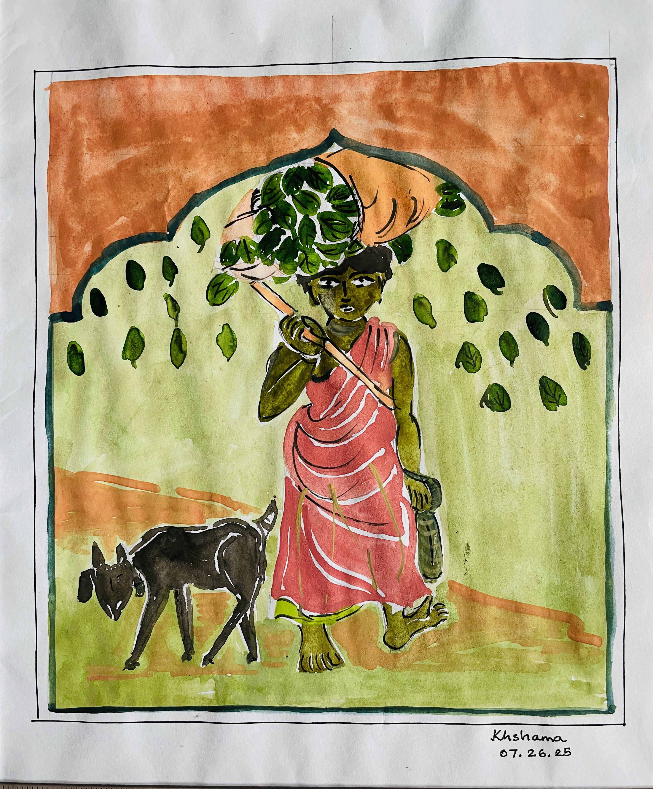
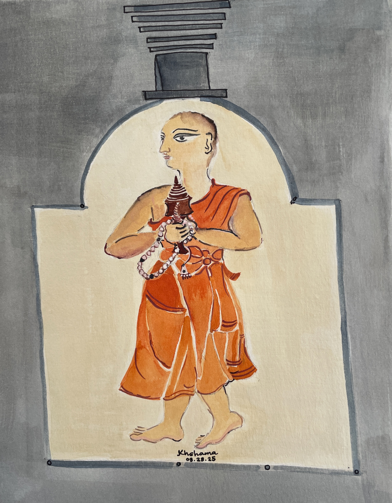
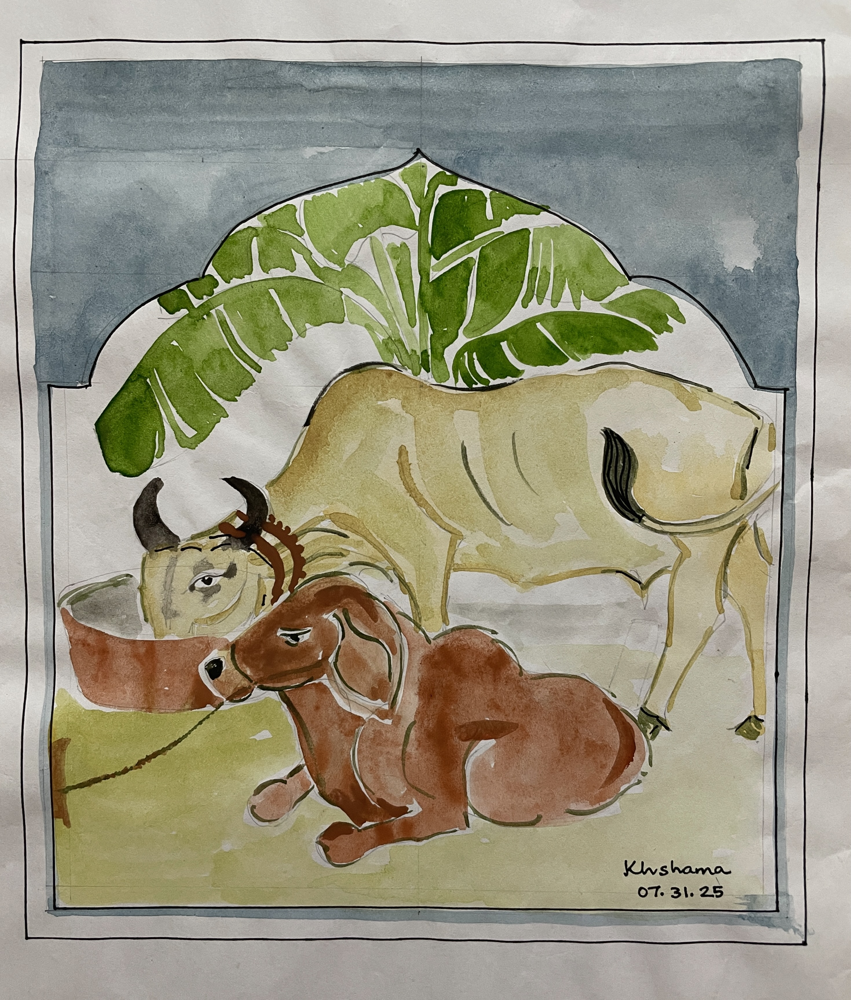
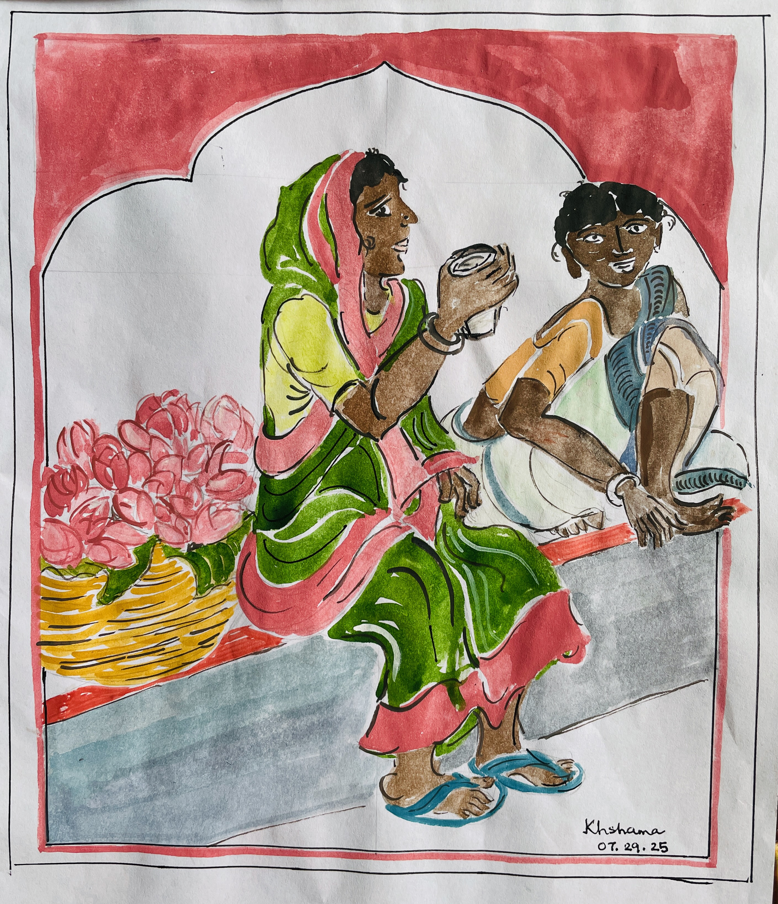
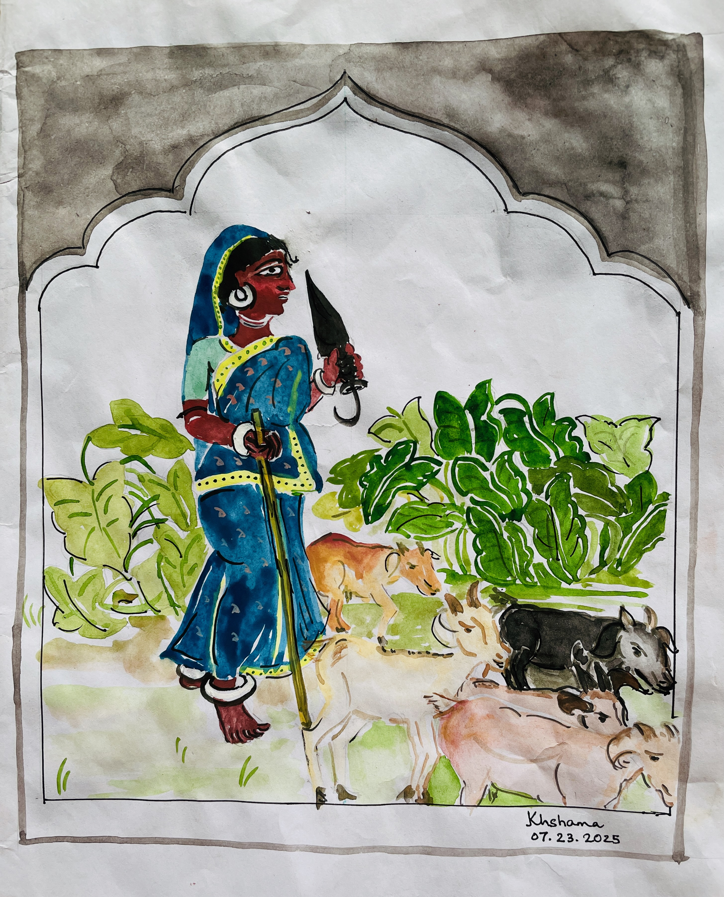
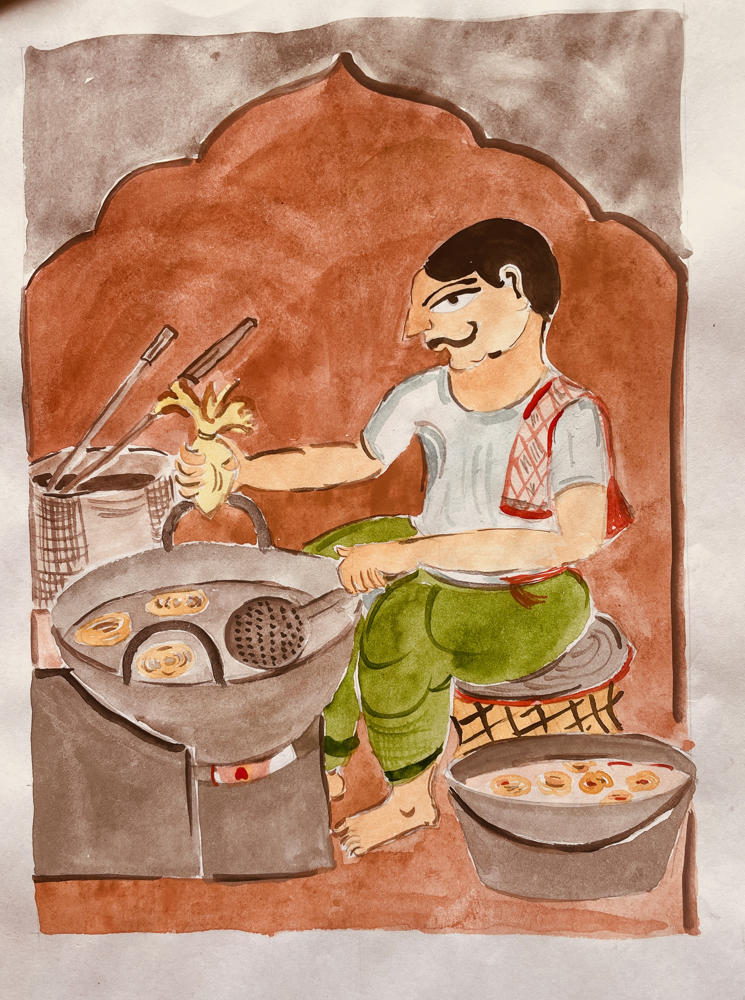
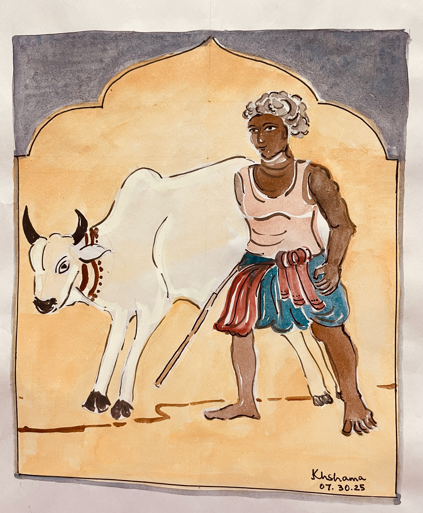
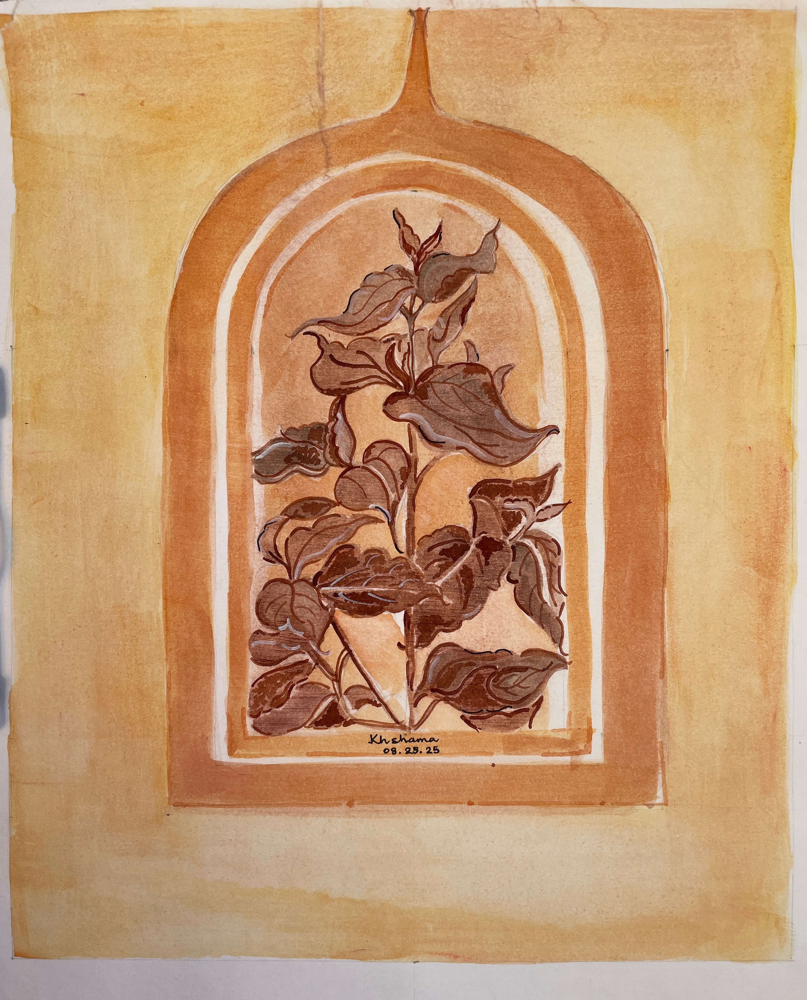
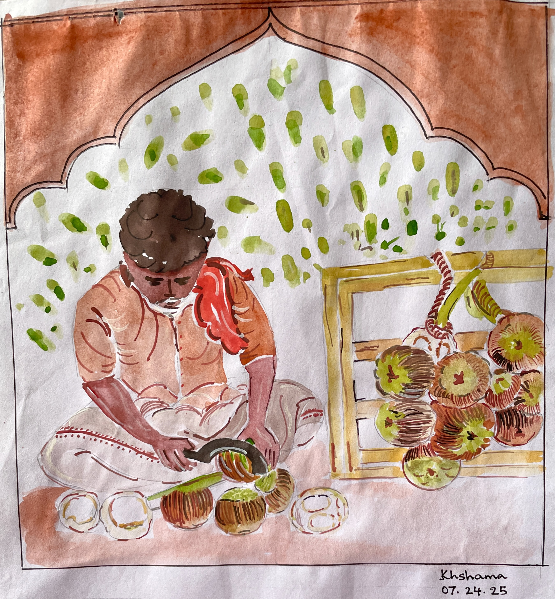

The Canvas - Ornamental and Wash Paintings

On the way to work. Pen and Ink on paper.

Returning home after collecting sal leaves. Watercolor on paper.

Buddhist Friar. Wash on paper.

A lazy afternoon. Watercolor on paper.

Gossip at tea-time. Watercolor on paper.

Herding goats. Watercolor on paper.

Making jilebis. Watercolor on paper.

Selling water lilies. Watercolor on paper.

Shepherd. Watercolor on paper.

Siuli. Wash on paper.

Selling tal sansh. Watercolor on paper.
Biography
Haimonti is trained as a computer scientist,
but loves to read, paint, and write in her spare time.